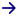

<header class="navbar container-padding-x navbar-expand-lg navbar-dark bg-body-primary bg-white py-4 z-1 shadow-sm">
  <nav class="container-fluid">
    <div class="d-flex gap-2 align-items-center">
      
    </div>


    <!-- Step 3: Toggle the value of the property when the toggler button is clicked. -->
    <button class="navbar-toggler" type="button" (click)="isMenuCollapsed = !isMenuCollapsed">&#9776;</button>


    <!-- Step 2: Add the ngbCollapse directive to the element below. -->
    <div [ngbCollapse]="isMenuCollapsed" class="collapse navbar-collapse ms-lg-5">
      <ul class="navbar-nav gap-3">
        <li class="nav-item active">
          <a class="nav-link text-primary" [routerLink]="''" routerLinkActive="active"
            (click)="isMenuCollapsed = true">Início</a>
        </li>
        <li class="nav-item">
          <a class="nav-link text-primary" [routerLink]="'/abrigos'" routerLinkActive="active"
            (click)="isMenuCollapsed = true">Abrigos</a>
        </li>
        <li class="nav-item">
          <a class="nav-link text-primary" [routerLink]="'contato'" routerLinkActive="active"
            (click)="isMenuCollapsed = true">Contatos</a>
        </li>
      </ul>
      <div class="d-flex justify-content-end flex-grow-1">
        <a routerLink="login" class="d-flex gap-2 align-items-center pointer">
          <p class="text-primary subtitle2-medium">Fazer Login</p>
          
        </a>
      </div>
    </div>
  </nav>
</header>

